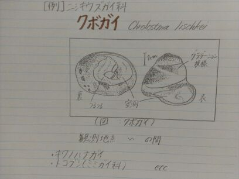

| 2012/11 16 Fri | ひめたん(*>ω<*)そ の234 |

明日は名古屋ライブ！
めちゃおっきいイベントだって
らりんから聞いてます＼(^^)／
名古屋ー！
ライブ楽しみー！
今日リハしてきたからねー♪
ちらっと宣伝をいたしますとー
サプライズあるかもですよ〜
ほらねー気になるでしょ(ω)にやり＊
中元画伯の実力。

どや。
貝をね観察したんだけどね、
塗り絵みたいに色つけちゃだめだからね
全部 点 !!!
点でできてるの！
もうねー手痛かった(´・ω・｀)
ほんまに、ほんまにほんまに
これはねやばいからね←
てことで
似顔絵会もあるね！
全部全部点で描く時間は
きっとないだろうと思うけど
頑張るからねー♪
去年似顔絵したメンバーも
いるみたいだから話聞いとこかなー
ひめたん当時JCだったものでね
似顔絵会も録音会もやってないんだよね
楽しそうーいいなーとか言ってたの。
今回は全員参加だから
嬉しす嬉しす( ^ω^ )
そしてこの土日を越えたら
テスト勉強やんなきゃな←
期末ね2週間後なの
きゃーやだーこあいよー(´;ω;`)
明日は名古屋ライブ！
めちゃおっきいイベントだって
らりんから聞いてます＼(^^)／
名古屋ー！
ライブ楽しみー！
今日リハしてきたからねー♪
ちらっと宣伝をいたしますとー
サプライズあるかもですよ〜
ほらねー気になるでしょ(ω)にやり＊
中元画伯の実力。
どや。
貝をね観察したんだけどね、
塗り絵みたいに色つけちゃだめだからね
全部 点 !!!
点でできてるの！
もうねー手痛かった(´・ω・｀)
ほんまに、ほんまにほんまに
これはねやばいからね←
てことで
似顔絵会もあるね！
全部全部点で描く時間は
きっとないだろうと思うけど
頑張るからねー♪
去年似顔絵したメンバーも
いるみたいだから話聞いとこかなー
ひめたん当時JCだったものでね
似顔絵会も録音会もやってないんだよね
楽しそうーいいなーとか言ってたの。
今回は全員参加だから
嬉しす嬉しす( ^ω^ )
そしてこの土日を越えたら
テスト勉強やんなきゃな←
期末ね2週間後なの
きゃーやだーこあいよー(´;ω;`)

 みさみさを漢字人文字で表すとなんでしょう？
みさみさを漢字人文字で表すとなんでしょう？
一文字？だったら <彩> かなあ。
花言葉をいくつ知っていますか
えーんわかんないー...
何か知ってたら教えてくださいな＊
微分は接線。積分は面積。って一般的に言われてるけど、
今の教科書って、微分積分とかを、
具体的にどういうところで、使うかって説明されてるの？
まだ習ってないのでわかりません(´;ω;`)
今度『ブラックひめたん(*■ω■*)』というタイトルでブログ更新してくれませんか？苦笑
だからブラックひめたんなんか
存在しないってばー
ひめたんはぴーんーく(*>ω<*)てへ
akbの口移しのチョコレートを乃木坂でやるとしたら3人誰を選ぶ？
愛未(能條愛未chan)、
みさみさ(衛藤美彩chan)、
みゅみゅ(若月佑美chan)かなー。
理由？き、きかないでくださいい...///
前にやったひめたん期末テストみたいなのやってほしいんだけど、どうかな？
んー考えときますね∩^ω^∩
また機会があれば れっつちゃれんじ！
てことで
この前募集した質問は全部答えました！
また募集すると思うから
そのときはよろしくねー♪
(＊´・ω・＊)ひめたん
この前募集した質問は全部答えました！
また募集すると思うから
そのときはよろしくねー♪
(＊´・ω・＊)ひめたん
コメント(106)
2012/11/16 23:48